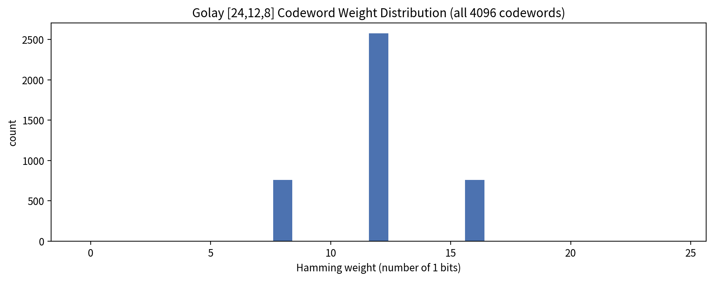
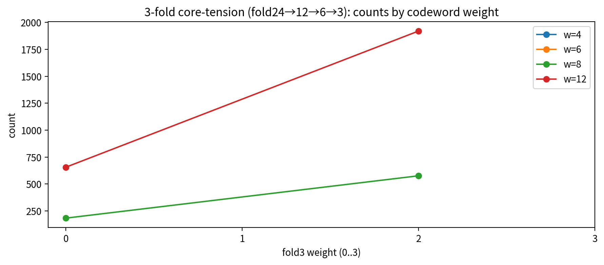
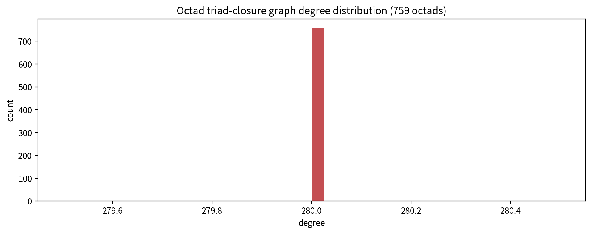
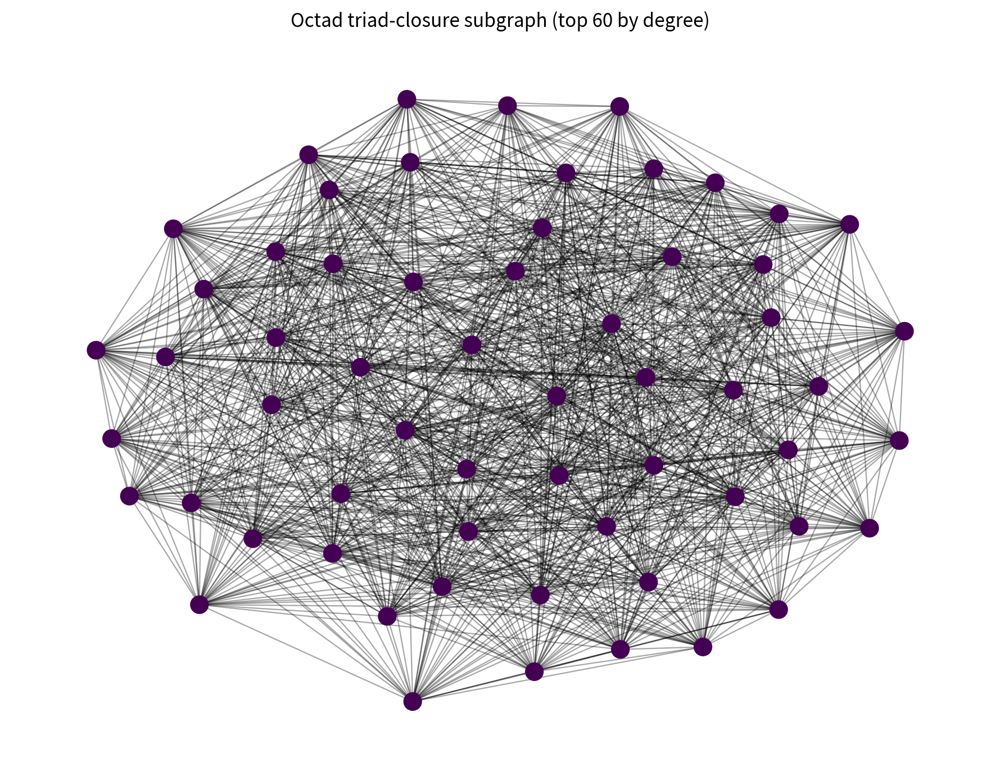
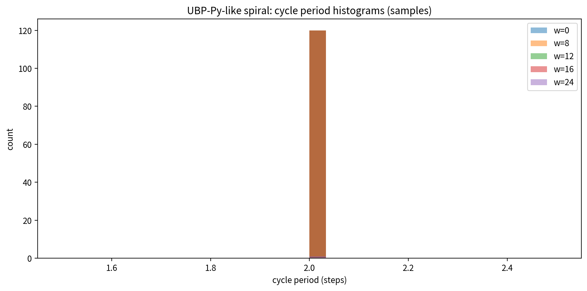

UBP Geometry Investigatory Study
System used: UBP Core Studio v4.0 (UBP Core v5.7) from DigitalEuan/UBP_Repo.
Highlights (deep-tested):
- Octad triad-closure graph is perfectly regular: 759 nodes, each degree 280; adjacent pairs share 140 common neighbors.
- 3-fold folding (XOR fold) compresses all 4096 Golay codewords into exactly 4 fold-states (000/011/101/110) with perfect balance.
- UBP-Py spiral operator is an involution: the entire codebook decomposes into 2048 two-cycles (no fixed points).
Figures

Golay codeword weight distribution

Fold-3 core-tension counts

Octad triad-closure degree distribution (uniform)

Top-degree octad subgraph (spring layout)

Spiral-cycle periods (all observed = 2)
For the full narrative and artifact list, read findings.md in the same folder.